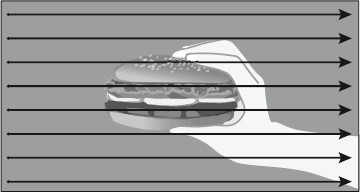
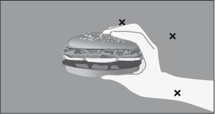
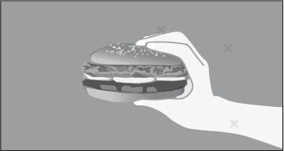

NeuroFormat® sisteminin başarıyla uygulandığı konulardan biri de kilo sorunları. Tabii öncelikle neden kilo aldığımızı bilmek koşuluyla
 ...
...
NeuroFormat® sisteminin başarıyla uygulandığı konulardan biri de kilo sorunları. Tabii öncelikle neden kilo aldığımızı bilmek koşuluyla...
İlk sorum şu: Kilonuzu hak ediyor musunuz?
Durun durun, “Bu da ne demek şimdi?” demeyin. Kafanız karışmasın. Şöyle sorayım isterseniz: Kilo sorunu olacak kadar yiyor musunuz?
Eğer cevabınız “evet”se, iştahınızın azaltılması sorununuzu çözecektir.
Ancak, fazla yemiyor ve hâlâ kilo veremiyorsanız işimiz biraz daha zor. İşte o zaman beyninizin neden kilolu olmayı seçtiğini bulup nedenleri temizlemek gerekiyor.
Biz ilk olarak kolay olanla ilgilenelim...
Kilomu hak ediyorum!
Demek cevabınız bu. Öyleyse size iyi haberi vereyim. NeuroFormat® sistemiyle birkaç saatlik bir uygulamayla iştahınızı kalıcı olarak azaltabilirsiniz.
Atıştırmaların durdurulması
Eğer “kilonuzun hakkını veriyorsanız” yani kilolu olmayı “hak ediyorsanız” muhtemelen yemeniz gereken zamanlar dışında da bol bol atıştırıyorsunuz demektir. Bunları azaltabilmek için yapmamız gereken ilk şey, hangi yer ve zamanlarda bu atıştırmaları en çok yaptığınızı bulmak. Sigara uygulamasında olduğu gibi aynı şekilde, günün hangi saatlerinde bir şeyler atıştırdığınızı listeleyin. Öğleyin işyerinde, akşam bilgisayar karşısında, televizyon seyrederken, yatmadan önce, gece uyanıp...

Sigara bırakma uygulamasında olduğu gibi, gözlerinizi kapatın ve kendinizi tam bir şeyler atıştırmak üzere olduğunuz durumda hayal edin. Daha önce olduğu gibi, bedeninizde olacak, kendinizi dışarıdan görmeyeceksiniz. Yemek istediğiniz, canınızın çektiği yiyeceği düşünerek (atıştırmaları genelde hangi yiyecekle yapıyorsanız) gözlerinizle tarayın. Hangi göz noktalarında atıştırma isteğinin daha fazla olduğunu bulup, özel noktanızı kullanarak temizleyeceksiniz.

İştah temizlenmesi sırasında, sigara bırakılması işleminde olduğu gibi kilidiniz kapalı olabilir. Zira beyniniz bu duyguyu temizlemekten ziyade, o doyumu yaşamaya odaklı olacaktır. Eğer özel noktanıza vurmanıza rağmen duygu azalmıyorsa yine kilidi aşağıdakine benzer bir ifadeyi kullanarak açın. Çikolata benzeri bir şey yeme isteğini temizlediğinizi farz edelim.
“Şu an bu çikolatayı yemek istediğim için, ağzımda hissettiğim bu sıcak yeme isteğine, ağzım sulanmasına rağmen, bu duygudan kurtulmak istemesem de, çikolatanın tadını ağzımda hissederek keyfi yaşamak istiyor olsam da, buna ihtiyacım olmadığı için, sağlığıma, mutluluğuma, tüm hayatıma zarar verdiği için ağzımda hissettiğim bu sıcak duyguyu tamamıyla serbest bırakıyorum.”
Tabii ki yapmanız gereken, yukarıda verdiğim ifadeyi üzerinde çalıştığınız yeme isteğine göre uyarlamak.
Daha sonra özel noktanıza geçerek bu duyguyu temizleyin. Kilidi açma kurallarımız hâlâ geçerli... Gerekiyorsa “avazınız çıktığı kadar” bağırın.
Bu arada başlarda bu duygu zor temizlense de uygulama yaptıkça bulduğunuz göz pozisyonları kilit açma ihtiyacı olmadan temizlenecektir. Bir başka deyişle, temizleme işlemi sonlara doğru çok daha hızlı gerçekleşiyor.

Uygulama oldukça basit, atıştırma yaptığınız tüm zamanları mümkün olduğu kadar “formatlayın”. Ayrıca bazen aynı anda yeme isteği hissettiğiniz farklı besinleri de temizlemeniz gerekebilir. Mesela, akşam tatlı yeme ihtiyacınızı temizlemiş ve bu duyguyu artık yaşamıyor olabilirsiniz. Bu sefer kendinizi tuzlu yerken bulabilirsiniz. Evet, ihtiyacınız tatlıda olduğu kadar güçlü olmaz. Ancak, amacınıza ulaşmanız için aynı uygulamayı tuzlular için de yapmak gerekebilir.
Uygulama sırasında mümkün olduğu kadar iştahınızı körüklemeye çalışın. Gerekirse göz taraması sırasında, yemeyi sevdiğiniz yiyeceği koklamanız ve hatta tatmanız etkiyi arttıracaktır.
Her zamanki gibi, uygulama sırasında duyguları fazlasıyla tetiklemekten kaçınmayın. Amacımız kökten temizlik yapmak.
Büyük öğünleri küçültmek
Eğer aralarda atıştırmıyor ama öğünlerinizi abartıyorsanız, bu konu üzerinde çalışın. Gözlerinizi kapatın ve çok yediğiniz yerlerde normalde yediğinizden çok az yediğinizi hayal edin. Evde, işyerinde, restoranda...
Öğünleriniz yarıya düşerse ne hissedersiniz? Hissedeceğiniz kayıp ve mahrum olma duygusunu temizleyin.
Yine unutmayın ki çoğu zaman temizlemenin en etkili olduğu yer, bizzat gerçek hayattır. Özellikle de çok sevdiğiniz bir yemeği yerken, tam keyif aldığınız yerde yemeyi kesin ve hissettiğiniz duyguları tüm göz noktalarında temizleyin.
Hissettiğiniz nasıl bir doyumsuzluk, kayıp, mahrum olma hissi? Tam olarak vücudunuzun neresinde hissediyorsunuz? Göz noktalarını tarayarak, en yoğun hissettiğiniz noktalarda temizleyin.
Fazla iştaha neden olan duyguların temizlenmesi
Bazen, iştah temizlenmesinde kesin çözüm biraz psikoloji üzerinde de uğraşmayı gerektirebilir.
Eğer aşırı bir iştahınız olduğunuzu düşünüyorsanız, gereksiz atıştırmalar ve öğün sırasındaki iştah üzerinde çalışmanıza rağmen biraz daha yol kat etmeye ihtiyacınız varsa, doğrudan psikolojiniz üzerinde çalışmayı deneyebilirsiniz.
Genelde bu aşamaya gelmeden çözüme ulaşsak da, herkesin hikâyesi farklı. Sizi yemeye yönlendirecek kaygı, korku, endişe gibi duyguları ilgili bölümlerde paylaştığım gibi temizleyin. Zaten çalışmalarınızın etkisi iştahınızı azaltacaktır.
Diyet engellerinin temizlenmesi
Kilo hedefinize bağlı olarak, burada paylaştığım uygulamayı bir diyetle beraber yapmak hızınızı arttırabilir. Takip ettiğiniz diyet programıyla, vücudunuzdan daha hızlı kilo atılmasını sağlayabilirsiniz.
Ancak, diyetler ne yazık ki bazılarımıza pek de iyi şeyler hissettirmiyor. Belki diyet konusunda geçmişteki başarısız tecrübelerimizden dolayı, yediklerimize dikkat etmek ve dayatılan öğünleri yemek konusunda çok ciddi bir direnç hissediyoruz. Böyle bir programa girmek için ilk yapılması gereken de, bununla ilgili yaşadığımız kötü duyguları temizlemek olacaktır. Mesela:
• Daha önce kilo verip hemen geri aldığımız için hem diyetlere hem de kendimize duyduğumuz öfkeyi
• Tekrar diyet yapıp geçmişteki gibi başarısız olma korkumuzu
• Diyet yaptığımız zaman hissedebileceğimiz mutsuzluk, mahrum olma, tek keyif aldığımız mutluluğun elimizden alınması duygularını
Bu duyguları nasıl temizleyeceğinizi biliyorsunuz. Eğer, zayıflama konusunda bu tür duygular önünüze engel koyuyorsa, işiniz çok zor değil... Formatlayın gitsin!
Kilomun hakkını vermiyorum!
Ya hiçbir şey yemeden kilo alıyorsanız?
İtiraf ediyorum... Bu durumda işimiz biraz daha zor. Gerçekten bilinçaltınızın neden kilolu olmayı seçtiğini bularak sebebi temizlememiz gerekiyor. Sebep temizlendikten sonra zaten beyin kilolu olma durumunu kendi sonlandırıyor.
Peki, böyle bir durumun yaşanması için ihtimaller nedir?
Aslında birçok ihtimal olabilir. Tiroid bezlerinizin az çalışması (hipotiroid), böbreklerinizin fazla su tutması, besin hassasiyetleri gibi fiziki sebepler olabildiği gibi, “güçlü durmak” gibi psikolojik durumlar ihtimal dahilinde olabilir.
Bu arada, bir sonraki bölümde aslında çoğu fiziksel gözüken birçok durumun da zaten psikolojik kaynaklı olduğunu detaylı olarak inceleyeceğiz.
Eğer kilonuzun hakkını vermiyorsanız, kesin çözüm için kronolojik sağlık ve kilo durumunuzun, yaşadığınız büyük travmaların, hangi besinlere karşı hassas olduğunuzun bulunması, benzeri detaylı analizler yapılması gerekiyor.
Ortaya çıkan sonuca göre sorunun temizlenmesi için öncelik sıralamasıyla birçok yol denenmeli.
Benim de özellikle kendi ekibimdeki doktorlarla koordineli şekilde yürüttüğüm bu çalışmalar bu kitabın detay düzeyinin oldukça üzerinde. O yüzden şimdilik bu konuyu kapatıyoruz...
Ve kilomuzun en çok tehdit ettiği çok büyük bir konuya giriş yapıyoruz.
Sağlığımız!..